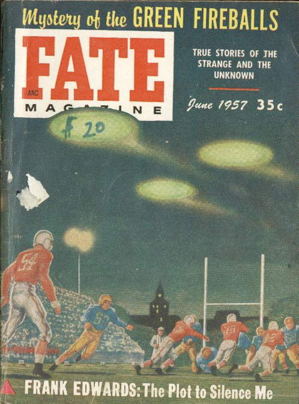

Couverture de Fate ce mois-ci sur les boules lumineuses vertes

De Shreveport à
Converse (Louisiane). Peu après le décollage de l'aéroport de Shreveport, se dirigeant vers le Lac Charles
(Louisiane) et fait une ascension, le capitaine Lynn Kern et le 1er officier Abbey Zimmerman pilotant le
vol 103 de Trans-Texas Airlines sont informés par la tour de contrôle qu'une petite lumière est visible non
loin d'eux. Ils voient le phénomène pulsant bleu-vert semblable à une étoile stationnant (approchant ?) leur 10 [2?]
heures à 400 pieds environ puis grimper rapidement à 1000 pieds, en parallèle à l'avion de ligne puis à une vitesse
de 110 nœuds (130 miles/h et plus tard 165 miles/h) mais à une altitude plus élevée et à 0,5 mile de distance. Kern
fait clignoter ses feux d'atterrissage et le phénomène répond avec un rayon [?] de lumière. Un 2d
phénomène bleu-vert pulsant rejoint le 1er sur le côté opposé de l'avion de ligne (puis à 9000 pieds),
l'équipe aérienne de la tour qu'il a les 2 objets sur le radar et visuellement aux jumelles, qui se dirigent vers le
sud à 170 °, grimpant jusqu'à 10000 pieds environ et suivant l'avion de ligne vers Converse (Louisiane, à environ
45 miles au sud de Shreveport) où le pilote interroge le site radar ADC, England AFS, d'Alexandria (Lousiane), qui
confirme les 2 cibles dans le voisinage de l'avion de ligne à 9700 pieds. Les phénomènes sont perdus de vue dans un
banc de nuages au sud-ouest. L'observation a duré 1 hr ? Hynek, J. A. : UFO Experience ch. 7, cas RV-6NARCAP.
Dans le New Jersey et sur la côte Atlantique, observation Cat. 9, radar
au sol "1957 UFO Wave Sightings Chronology", NICAP.
A Milan (Italie), G. U. Donadio
(traducteur pour une firme d'import-export), observe un objet gros comme un œuf de poule Tenu à bout de bras ?
voler très rapidement, zigzagger, stationner et tournoyer, puis monter en flèche au bout de 17 mn Berliner, D.Cas Blue
Book n° 4760 non résolu.
A la base aérienne de McChord (Washington), observation de 33 mn Liste de McDonaldIndex du FUFOR.
A Lancashire (Angleterre), observation d'un ovni en forme de Saturne
avec des "ouvertures" à travers un télescope en plein jour UFO Evidence, NICAP, XII.
À Jackson (Mississippi), un professeur de physique voit un ovni avec un halo de
lumière autour de lui et ce qui semble être 3 ouverturesUFO Evidence, NICAP, VI.
Dans l'Océan Pacifique, à 150 miles au large de San Francisco, le capitaine et l'équipage du cargo Hawaiian
Fisherman voit 3 phénomènes brillamment éclairés comme de petites lunesUFO Evidence, NICAP, II.
A Baltimore (Maryland), Cat. 3., la radio d'une voiture s'arrête de
fonctionner et les lumières de la rue s'éteignent lorsqu'une formation de 7 disques blancs avec des anneaux rouges
passe au-dessus.
A Belo Horizonte (Brésil), un objet semblable à un disque se met au
niveau d'un avion, manœuvrant autour UFO Evidence, NICAP, X.